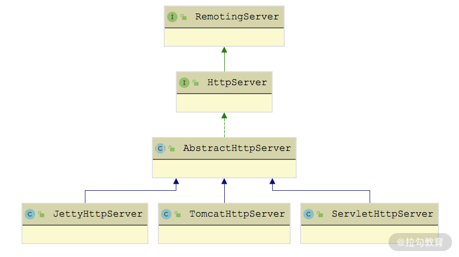

- 00 开篇词 深入掌握 Dubbo 原理与实现，提升你的职场竞争力.md.html
- 01 Dubbo 源码环境搭建：千里之行，始于足下.md.html
- 02 Dubbo 的配置总线：抓住 URL，就理解了半个 Dubbo.md.html
- 03 Dubbo SPI 精析，接口实现两极反转（上）.md.html
- 04 Dubbo SPI 精析，接口实现两极反转（下）.md.html
- 05 海量定时任务，一个时间轮搞定.md.html
- 06 ZooKeeper 与 Curator，求你别用 ZkClient 了（上）.md.html
- 07 ZooKeeper 与 Curator，求你别用 ZkClient 了（下）.md.html
- 08 代理模式与常见实现.md.html
- 09 Netty 入门，用它做网络编程都说好（上）.md.html
- 10 Netty 入门，用它做网络编程都说好（下）.md.html
- 11 简易版 RPC 框架实现（上）.md.html
- 12 简易版 RPC 框架实现（下）.md.html
- 13 本地缓存：降低 ZooKeeper 压力的一个常用手段.md.html
- 14 重试机制是网络操作的基本保证.md.html
- 15 ZooKeeper 注册中心实现，官方推荐注册中心实践.md.html
- 16 Dubbo Serialize 层：多种序列化算法，总有一款适合你.md.html
- 17 Dubbo Remoting 层核心接口分析：这居然是一套兼容所有 NIO 框架的设计？.md.html
- 18 Buffer 缓冲区：我们不生产数据，我们只是数据的搬运工.md.html
- 19 Transporter 层核心实现：编解码与线程模型一文打尽（上）.md.html
- 20 Transporter 层核心实现：编解码与线程模型一文打尽（下）.md.html
- 21 Exchange 层剖析：彻底搞懂 Request-Response 模型（上）.md.html
- 22 Exchange 层剖析：彻底搞懂 Request-Response 模型（下）.md.html
- 23 核心接口介绍，RPC 层骨架梳理.md.html
- 24 从 Protocol 起手，看服务暴露和服务引用的全流程（上）.md.html
- 25 从 Protocol 起手，看服务暴露和服务引用的全流程（下）.md.html
- 26 加餐：直击 Dubbo “心脏”，带你一起探秘 Invoker（上）.md.html
- 27 加餐：直击 Dubbo “心脏”，带你一起探秘 Invoker（下）.md.html
- 28 复杂问题简单化，代理帮你隐藏了多少底层细节？.md.html
- 29 加餐：HTTP 协议 + JSON-RPC，Dubbo 跨语言就是如此简单.md.html
- 30 Filter 接口，扩展 Dubbo 框架的常用手段指北.md.html
- 31 加餐：深潜 Directory 实现，探秘服务目录玄机.md.html
- 32 路由机制：请求到底怎么走，它说了算（上）.md.html
- 33 路由机制：请求到底怎么走，它说了算（下）.md.html
- 34 加餐：初探 Dubbo 动态配置的那些事儿.md.html
- 35 负载均衡：公平公正物尽其用的负载均衡策略，这里都有（上）.md.html
- 36 负载均衡：公平公正物尽其用的负载均衡策略，这里都有（下）.md.html
- 37 集群容错：一个好汉三个帮（上）.md.html
- 38 集群容错：一个好汉三个帮（下）.md.html
- 39 加餐：多个返回值不用怕，Merger 合并器来帮忙.md.html
- 40 加餐：模拟远程调用，Mock 机制帮你搞定.md.html
- 41 加餐：一键通关服务发布全流程.md.html
- 42 加餐：服务引用流程全解析.md.html
- 43 服务自省设计方案：新版本新方案.md.html
- 44 元数据方案深度剖析，如何避免注册中心数据量膨胀？.md.html
- 45 加餐：深入服务自省方案中的服务发布订阅（上）.md.html
- 46 加餐：深入服务自省方案中的服务发布订阅（下）.md.html
- 47 配置中心设计与实现：集中化配置 and 本地化配置，我都要（上）.md.html
- 48 配置中心设计与实现：集中化配置 and 本地化配置，我都要（下）.md.html
- 49 结束语 认真学习，缩小差距.md.html
- 捐赠
29 加餐：HTTP 协议 + JSON-RPC，Dubbo 跨语言就是如此简单
在前面课时介绍 Protocol 和 Invoker 实现时，我们重点介绍了 AbstractProtocol 以及 DubboInvoker 实现。其实，Protocol 还有一个实现分支是 AbstractProxyProtocol，如下图所示：
AbstractProxyProtocol 继承关系图
从图中我们可以看到：gRPC、HTTP、WebService、Hessian、Thrift 等协议对应的 Protocol 实现，都是继承自 AbstractProxyProtocol 抽象类。
目前互联网的技术栈百花齐放，很多公司会使用 Node.js、Python、Rails、Go 等语言来开发 一些 Web 端应用，同时又有很多服务会使用 Java 技术栈实现，这就出现了大量的跨语言调用的需求。Dubbo 作为一个 RPC 框架，自然也希望能实现这种跨语言的调用，目前 Dubbo 中使用“HTTP 协议 + JSON-RPC”的方式来达到这一目的，其中 HTTP 协议和 JSON 都是天然跨语言的标准，在各种语言中都有成熟的类库。
下面我们就重点来分析 Dubbo 对 HTTP 协议的支持。首先，我会介绍 JSON-RPC 的基础，并通过一个示例，帮助你快速入门，然后介绍 Dubbo 中 HttpProtocol 的具体实现，也就是如何将 HTTP 协议与 JSON-RPC 结合使用，实现跨语言调用的效果。
JSON-RPC
Dubbo 中支持的 HTTP 协议实际上使用的是 JSON-RPC 协议。
JSON-RPC 是基于 JSON 的跨语言远程调用协议。Dubbo 中的 dubbo-rpc-xml、dubbo-rpc-webservice 等模块支持的 XML-RPC、WebService 等协议与 JSON-RPC 一样，都是基于文本的协议，只不过 JSON 的格式比 XML、WebService 等格式更加简洁、紧凑。与 Dubbo 协议、Hessian 协议等二进制协议相比，JSON-RPC 更便于调试和实现，可见 JSON-RPC 协议还是一款非常优秀的远程调用协议。
在 Java 体系中，有很多成熟的 JSON-RPC 框架，例如 jsonrpc4j、jpoxy 等，其中，jsonrpc4j 本身体积小巧，使用方便，既可以独立使用，也可以与 Spring 无缝集合，非常适合基于 Spring 的项目。
下面我们先来看看 JSON-RPC 协议中请求的基本格式：
{
"id":1，
"method":"sayHello",
"params":[
"Dubbo json-rpc"
]
}
JSON-RPC请求中各个字段的含义如下：
- id 字段，用于唯一标识一次远程调用。
- method 字段，指定了调用的方法名。
- params 数组，表示方法传入的参数，如果方法无参数传入，则传入空数组。
在 JSON-RPC 的服务端收到调用请求之后，会查找到相应的方法并进行调用，然后将方法的返回值整理成如下格式，返回给客户端：
{
"id":1，
"result":"Hello Dubbo json-rpc",
"error":null
}
JSON-RPC响应中各个字段的含义如下：
- id 字段，用于唯一标识一次远程调用，该值与请求中的 id 字段值保持一致。
- result 字段，记录了方法的返回值，若无返回值，则返回空；若调用错误，返回 null。
- error 字段，表示调用发生异常时的异常信息，方法执行无异常时该字段为 null。
jsonrpc4j 基础使用
Dubbo 使用 jsonrpc4j 库来实现 JSON-RPC 协议，下面我们使用 jsonrpc4j 编写一个简单的 JSON-RPC 服务端示例程序和客户端示例程序，并通过这两个示例程序说明 jsonrpc4j 最基本的使用方式。
首先，我们需要创建服务端和客户端都需要的 domain 类以及服务接口。我们先来创建一个 User 类，作为最基础的数据对象：
public class User implements Serializable {
private int userId;
private String name;
private int age;
// 省略上述字段的getter/setter方法以及toString()方法
}
接下来创建一个 UserService 接口作为服务接口，其中定义了 5 个方法，分别用来创建 User、查询 User 以及相关信息、删除 User：
public interface UserService {
User createUser(int userId, String name, int age);
User getUser(int userId);
String getUserName(int userId);
int getUserId(String name);
void deleteAll();
}
UserServiceImpl 是 UserService 接口的实现类，其中使用一个 ArrayList 集合管理 User 对象，具体实现如下：
public class UserServiceImpl implements UserService {
// 管理所有User对象
private List<User> users = new ArrayList<>();
@Override
public User createUser(int userId, String name, int age) {
System.out.println("createUser method");
User user = new User();
user.setUserId(userId);
user.setName(name);
user.setAge(age);
users.add(user); // 创建User对象并添加到users集合中
return user;
}
@Override
public User getUser(int userId) {
System.out.println("getUser method");
// 根据userId从users集合中查询对应的User对象
return users.stream().filter(u -> u.getUserId() == userId).findAny().get();
}
@Override
public String getUserName(int userId) {
System.out.println("getUserName method");
// 根据userId从users集合中查询对应的User对象之后，获取该User的name
return getUser(userId).getName();
}
@Override
public int getUserId(String name) {
System.out.println("getUserId method");
// 根据name从users集合中查询对应的User对象，然后获取该User的id
return users.stream().filter(u -> u.getName().equals(name)).findAny().get().getUserId();
}
@Override
public void deleteAll() {
System.out.println("deleteAll");
users.clear(); // 清空users集合
}
}
整个用户管理业务的核心大致如此。下面我们来看服务端如何将 UserService 与 JSON-RPC 关联起来。
首先，我们创建 RpcServlet 类，它是 HttpServlet 的子类，并覆盖了 HttpServlet 的 service() 方法。我们知道，HttpServlet 在收到 GET 和 POST 请求的时候，最终会调用其 service() 方法进行处理；HttpServlet 还会将 HTTP 请求和响应封装成 HttpServletRequest 和 HttpServletResponse 传入 service() 方法之中。这里的 RpcServlet 实现之中会创建一个 JsonRpcServer，并在 service() 方法中将 HTTP 请求委托给 JsonRpcServer 进行处理：
public class RpcServlet extends HttpServlet {
private JsonRpcServer rpcServer = null;
public RpcServlet() {
super();
// JsonRpcServer会按照json-rpc请求，调用UserServiceImpl中的方法
rpcServer = new JsonRpcServer(new UserServiceImpl(), UserService.class);
}
@Override
protected void service(HttpServletRequest request,
HttpServletResponse response) throws ServletException, IOException {
rpcServer.handle(request, response);
}
}
最后，我们创建一个 JsonRpcServer 作为服务端的入口类，在其 main() 方法中会启动 Jetty 作为 Web 容器，具体实现如下：
public class JsonRpcServer {
public static void main(String[] args) throws Throwable {
// 服务器的监听端口
Server server = new Server(9999);
// 关联一个已经存在的上下文
WebAppContext context = new WebAppContext();
// 设置描述符位置
context.setDescriptor("/dubbo-demo/json-rpc-demo/src/main/webapp/WEB-INF/web.xml");
// 设置Web内容上下文路径
context.setResourceBase("/dubbo-demo/json-rpc-demo/src/main/webapp");
// 设置上下文路径
context.setContextPath("/");
context.setParentLoaderPriority(true);
server.setHandler(context);
server.start();
server.join();
}
}
这里使用到的 web.xml 配置文件如下：
<?xml version="1.0" encoding="UTF-8"?>
<web-app
xmlns:xsi="http://www.w3.org/2001/XMLSchema-instance"
xmlns="http://xmlns.jcp.org/xml/ns/javaee"
xsi:schemaLocation="http://xmlns.jcp.org/xml/ns/javaee http://xmlns.jcp.org/xml/ns/javaee/web-app_3_1.xsd"
version="3.1">
<servlet>
<servlet-name>RpcServlet</servlet-name>
<servlet-class>com.demo.RpcServlet</servlet-class>
</servlet>
<servlet-mapping>
<servlet-name>RpcServlet</servlet-name>
<url-pattern>/rpc</url-pattern>
</servlet-mapping>
</web-app>
完成服务端的编写之后，下面我们再继续编写 JSON-RPC 的客户端。在 JsonRpcClient 中会创建 JsonRpcHttpClient，并通过 JsonRpcHttpClient 请求服务端：
public class JsonRpcClient {
private static JsonRpcHttpClient rpcHttpClient;
public static void main(String[] args) throws Throwable {
// 创建JsonRpcHttpClient
rpcHttpClient = new JsonRpcHttpClient(new URL("http://127.0.0.1:9999/rpc"));
JsonRpcClient jsonRpcClient = new JsonRpcClient();
jsonRpcClient.deleteAll(); // 调用deleteAll()方法删除全部User
// 调用createUser()方法创建User
System.out.println(jsonRpcClient.createUser(1, "testName", 30));
// 调用getUser()、getUserName()、getUserId()方法进行查询
System.out.println(jsonRpcClient.getUser(1));
System.out.println(jsonRpcClient.getUserName(1));
System.out.println(jsonRpcClient.getUserId("testName"));
}
public void deleteAll() throws Throwable {
// 调用服务端的deleteAll()方法
rpcHttpClient.invoke("deleteAll", null);
}
public User createUser(int userId, String name, int age) throws Throwable {
Object[] params = new Object[]{userId, name, age};
// 调用服务端的createUser()方法
return rpcHttpClient.invoke("createUser", params, User.class);
}
public User getUser(int userId) throws Throwable {
Integer[] params = new Integer[]{userId};
// 调用服务端的getUser()方法
return rpcHttpClient.invoke("getUser", params, User.class);
}
public String getUserName(int userId) throws Throwable {
Integer[] params = new Integer[]{userId};
// 调用服务端的getUserName()方法
return rpcHttpClient.invoke("getUserName", params, String.class);
}
public int getUserId(String name) throws Throwable {
String[] params = new String[]{name};
// 调用服务端的getUserId()方法
return rpcHttpClient.invoke("getUserId", params, Integer.class);
}
}
// 输出：
// User{userId=1, name='testName', age=30}
// User{userId=1, name='testName', age=30}
// testName
// 1
AbstractProxyProtocol
在 AbstractProxyProtocol 的 export() 方法中，首先会根据 URL 检查 exporterMap 缓存，如果查询失败，则会调用 ProxyFactory.getProxy() 方法将 Invoker 封装成业务接口的代理类，然后通过子类实现的 doExport() 方法启动底层的 ProxyProtocolServer，并初始化 serverMap 集合。具体实现如下：
public <T> Exporter<T> export(final Invoker<T> invoker) throws RpcException {
// 首先查询exporterMap集合
final String uri = serviceKey(invoker.getUrl());
Exporter<T> exporter = (Exporter<T>) exporterMap.get(uri);
if (exporter != null) {
if (Objects.equals(exporter.getInvoker().getUrl(), invoker.getUrl())) {
return exporter;
}
}
// 通过ProxyFactory创建代理类，将Invoker封装成业务接口的代理类
final Runnable runnable = doExport(proxyFactory.getProxy(invoker, true), invoker.getInterface(), invoker.getUrl());
// doExport()方法返回的Runnable是一个回调，其中会销毁底层的Server，将会在unexport()方法中调用该Runnable
exporter = new AbstractExporter<T>(invoker) {
public void unexport() {
super.unexport();
exporterMap.remove(uri);
if (runnable != null) {
runnable.run();
}
}
};
exporterMap.put(uri, exporter);
return exporter;
}
在 HttpProtocol 的 doExport() 方法中，与前面介绍的 DubboProtocol 的实现类似，也要启动一个 RemotingServer。为了适配各种 HTTP 服务器，例如，Tomcat、Jetty 等，Dubbo 在 Transporter 层抽象出了一个 HttpServer 的接口。
dubbo-remoting-http 模块位置
dubbo-remoting-http 模块的入口是 HttpBinder 接口，它被 @SPI 注解修饰，是一个扩展接口，有三个扩展实现，默认使用的是 JettyHttpBinder 实现，如下图所示：
JettyHttpBinder 继承关系图
HttpBinder 接口中的 bind() 方法被 @Adaptive 注解修饰，会根据 URL 的 server 参数选择相应的 HttpBinder 扩展实现，不同 HttpBinder 实现返回相应的 HttpServer 实现。HttpServer 的继承关系如下图所示：

HttpServer 继承关系图
这里我们以 JettyHttpServer 为例简单介绍 HttpServer 的实现，在 JettyHttpServer 中会初始化 Jetty Server，其中会配置 Jetty Server 使用到的线程池以及处理请求 Handler：
public JettyHttpServer(URL url, final HttpHandler handler) {
// 初始化AbstractHttpServer中的url字段和handler字段
super(url, handler);
this.url = url;
DispatcherServlet.addHttpHandler( // 添加HttpHandler
url.getParameter(Constants.BIND_PORT_KEY,
url.getPort()), handler);
// 创建线程池
int threads = url.getParameter(THREADS_KEY, DEFAULT_THREADS);
QueuedThreadPool threadPool = new QueuedThreadPool();
threadPool.setDaemon(true);
threadPool.setMaxThreads(threads);
threadPool.setMinThreads(threads);
// 创建Jetty Server
server = new Server(threadPool);
// 创建ServerConnector，并指定绑定的ip和port
ServerConnector connector = new ServerConnector(server);
String bindIp = url.getParameter(Constants.BIND_IP_KEY, url.getHost());
if (!url.isAnyHost() && NetUtils.isValidLocalHost(bindIp)) {
connector.setHost(bindIp);
}
connector.setPort(url.getParameter(Constants.BIND_PORT_KEY, url.getPort()));
server.addConnector(connector);
// 创建ServletHandler并与Jetty Server关联，由DispatcherServlet处理全部的请求
ServletHandler servletHandler = new ServletHandler();
ServletHolder servletHolder = servletHandler.addServletWithMapping(DispatcherServlet.class, "/*");
servletHolder.setInitOrder(2);
// 创建ServletContextHandler并与Jetty Server关联
ServletContextHandler context = new ServletContextHandler(server, "/", ServletContextHandler.SESSIONS);
context.setServletHandler(servletHandler);
ServletManager.getInstance().addServletContext(url.getParameter(Constants.BIND_PORT_KEY, url.getPort()), context.getServletContext());
server.start();
}
我们可以看到 JettyHttpServer 收到的全部请求将委托给 DispatcherServlet 这个 HttpServlet 实现，而 DispatcherServlet 的 service() 方法会把请求委托给对应接端口的 HttpHandler 处理：
protected void service(HttpServletRequest request, HttpServletResponse response) throws ServletException, IOException {
// 从HANDLERS集合中查询端口对应的HttpHandler对象
HttpHandler handler = HANDLERS.get(request.getLocalPort());
if (handler == null) { // 端口没有对应的HttpHandler实现
response.sendError(HttpServletResponse.SC_NOT_FOUND, "Service not found.");
} else { // 将请求委托给HttpHandler对象处理
handler.handle(request, response);
}
}
了解了 Dubbo 对 HttpServer 的抽象以及 JettyHttpServer 的核心之后，我们回到 HttpProtocol 中的 doExport() 方法继续分析。
在 HttpProtocol.doExport() 方法中会通过 HttpBinder 创建前面介绍的 HttpServer 对象，并记录到 serverMap 中用来接收 HTTP 请求。这里初始化 HttpServer 以及处理请求用到的 HttpHandler 是 HttpProtocol 中的内部类，在其他使用 HTTP 协议作为基础的 RPC 协议实现中也有类似的 HttpHandler 实现类，如下图所示：
HttpHandler 继承关系图
在 HttpProtocol.InternalHandler 中的 handle() 实现中，会将请求委托给 skeletonMap 集合中记录的 JsonRpcServer 对象进行处理：
public void handle(HttpServletRequest request, HttpServletResponse response) throws ServletException {
String uri = request.getRequestURI();
JsonRpcServer skeleton = skeletonMap.get(uri);
if (cors) { ... // 处理跨域问题 }
if (request.getMethod().equalsIgnoreCase("OPTIONS")) {
response.setStatus(200); // 处理OPTIONS请求
} else if (request.getMethod().equalsIgnoreCase("POST")) {
// 只处理POST请求
RpcContext.getContext().setRemoteAddress(
request.getRemoteAddr(), request.getRemotePort());
skeleton.handle(request.getInputStream(), response.getOutputStream());
} else {// 其他Method类型的请求，例如，GET请求，直接返回500
response.setStatus(500);
}
}
skeletonMap 集合中的 JsonRpcServer 是与 HttpServer 对象一同在 doExport() 方法中初始化的。最后，我们来看 HttpProtocol.doExport() 方法的实现：
protected <T> Runnable doExport(final T impl, Class<T> type, URL url) throws RpcException {
String addr = getAddr(url);
// 先查询serverMap缓存
ProtocolServer protocolServer = serverMap.get(addr);
if (protocolServer == null) { // 查询缓存失败
// 创建HttpServer,注意，传入的HttpHandler实现是InternalHandler
RemotingServer remotingServer = httpBinder.bind(url, new InternalHandler(url.getParameter("cors", false)));
serverMap.put(addr, new ProxyProtocolServer(remotingServer));
}
// 创建JsonRpcServer对象，并将URL与JsonRpcServer的映射关系记录到skeletonMap集合中
final String path = url.getAbsolutePath();
final String genericPath = path + "/" + GENERIC_KEY;
JsonRpcServer skeleton = new JsonRpcServer(impl, type);
JsonRpcServer genericServer = new JsonRpcServer(impl, GenericService.class);
skeletonMap.put(path, skeleton);
skeletonMap.put(genericPath, genericServer);
return () -> {// 返回Runnable回调，在Exporter中的unexport()方法中执行
skeletonMap.remove(path);
skeletonMap.remove(genericPath);
};
}
介绍完 HttpProtocol 暴露服务的相关实现之后，下面我们再来看 HttpProtocol 中引用服务相关的方法实现，即 protocolBindinRefer() 方法实现。该方法首先通过 doRefer() 方法创建业务接口的代理，这里会使用到 jsonrpc4j 库中的 JsonProxyFactoryBean 与 Spring 进行集成，在其 afterPropertiesSet() 方法中会创建 JsonRpcHttpClient 对象：
public void afterPropertiesSet() {
... ... // 省略ObjectMapper等对象
try {
// 创建JsonRpcHttpClient，用于后续发送json-rpc请求
jsonRpcHttpClient = new JsonRpcHttpClient(objectMapper, new URL(getServiceUrl()), extraHttpHeaders);
jsonRpcHttpClient.setRequestListener(requestListener);
jsonRpcHttpClient.setSslContext(sslContext);
jsonRpcHttpClient.setHostNameVerifier(hostNameVerifier);
} catch (MalformedURLException mue) {
throw new RuntimeException(mue);
}
}
下面来看 doRefer() 方法的具体实现：
protected <T> T doRefer(final Class<T> serviceType, URL url) throws RpcException {
final String generic = url.getParameter(GENERIC_KEY);
final boolean isGeneric = ProtocolUtils.isGeneric(generic) || serviceType.equals(GenericService.class);
JsonProxyFactoryBean jsonProxyFactoryBean = new JsonProxyFactoryBean();
... // 省略其他初始化逻辑
jsonProxyFactoryBean.afterPropertiesSet();
// 返回的是serviceType类型的代理对象
return (T) jsonProxyFactoryBean.getObject();
}
在 AbstractProxyProtocol.protocolBindingRefer() 方法中，会通过 ProxyFactory.getInvoker() 方法将 doRefer() 方法返回的代理对象转换成 Invoker 对象，并记录到 Invokers 集合中，具体实现如下：
protected <T> Invoker<T> protocolBindingRefer(final Class<T> type, final URL url) throws RpcException {
final Invoker<T> target = proxyFactory.getInvoker(doRefer(type, url), type, url);
Invoker<T> invoker = new AbstractInvoker<T>(type, url) {
@Override
protected Result doInvoke(Invocation invocation) throws Throwable {
Result result = target.invoke(invocation);
// 省略处理异常的逻辑
return result;
}
};
invokers.add(invoker); // 将Invoker添加到invokers集合中
return invoker;
}
总结
本课时重点介绍了在 Dubbo 中如何通过“HTTP 协议 + JSON-RPC”的方案实现跨语言调用。首先我们介绍了 JSON-RPC 中请求和响应的基本格式，以及其实现库 jsonrpc4j 的基本使用；接下来我们还详细介绍了 Dubbo 中 AbstractProxyProtocol、HttpProtocol 等核心类，剖析了 Dubbo 中“HTTP 协议 + JSON-RPC”方案的落地实现。
© 2019 - 2023 Liangliang Lee. Powered by gin and hexo-theme-book.